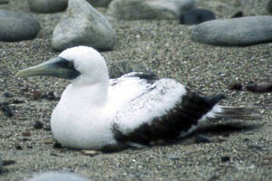
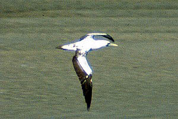

| These photographs accompany records that have been recently submitted to the committee. This record
has been ACCEPTED.  Masked Booby Sula dactylatra 26 Jan 97, Thornhill Broome Beach, VEN 1997-007 © 1997 Dan Guthrie  Masked Booby Sula dactylatra 18 Jan 97, Pt. Mugu Naval Station, VEN 1997-007 © 1997 Don DesJardin |